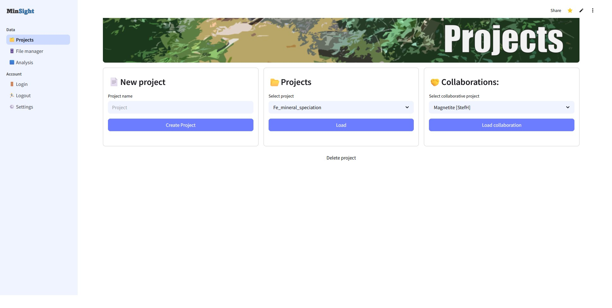

Curated datasets
Handling lots of datasets and projects can often get complicated, with folders here or there and little interaction between them all. MinSight puts data in one place, meaning that you can access files from any computer or mobile device with an internet connection. Our projects are saved securely on a cloud based server (Firebase Console).
Collaborate with students or colleagues so they can see your data, or you can see theirs and provide interactive feedback on the results.